Создание ЦСММ с использованием стереопар в ERDAS IMAGINE
Описание процесса создание ЦСММ средствами пакета ERDAS IMAGINE
Цифровая стереомодель местности (ЦСММ) - цифровое представление пространственных объектов, соответствующих объектовому составу топографических карт и планов, используемое для производства цифровых топографических карт.
Цифровые модели местности входят составной частью в информационное обеспечение географических информационных систем, систем автоматизированного создания и ведения кадастров различного назначения, систем навигации и позиционирования.
В указанных системах ЦММ служат картографической основой для пространственной привязки баз тематических данных, получаемых в результате проведения инженерных изысканий, земельно-кадастровых работ, межевания земель, статистических исследований, иных специальных работ и обследований.
Одним из способов создания ЦММ является использование стереопары, по перекрывающимся снимкам. Цифровая стереомодель местности может быть использована для дешифрирования трехмерной географической информации, создания на ее основе слоев ГИС, обновления и редактирования существующих двумерных векторных слоев ГИС.
Модуль Stereo Analyst Erdas IMAGINE специально разработан для работы со стереоснимками. Модуль может создавать стереопары несколькими способами (в том числе, простое согласование перекрывающихся необработанных снимков, аналогичное использованию стереоскопа).
Оглавление
Виды цифровых стереомоделей
1. Относительная стереопара на основе двух снимков с перекрытием. Два перекрывающихся снимка приводятся к одному масштабу, поворачиваются и преобразовываются для создания соответствующей стереопары. Полученная таким образом ЦСМ, содержит опорные трехмерные координаты в произвольной пространственной системе координат модели. Относительная стереопара определяется как неориентированная стереомодель.
2. Точная ориентированная стереомодель с использованием:
- двух файлов, содержащих снимки с перекрытием;
- названия проекции, сфероида и датума, в которых определены элементы внешнего ориентирования;
- заданных линейных и угловых единиц измерения;
- заданном направлении фотографирования (аэрофотосъемка, наземная или панорамная съемка);
- заданной системы координат углов;
- калибровочной информации о камере (фокусное расстояние, положение главной точки, дисторсию объектива и т.д.);
- коэффициентов внутреннего ориентирования (параметры аффинного преобразования для каждого изображения);
- элементов внешнего ориентирования для каждого снимка, включая линейные и угловые элементы ориентирования.
Внутреннее ориентирование
Определяет внутреннюю геометрию камеры или сенсора в момент съемки. Процесс внутреннего ориентирования заключается в нахождении элементов, определяющих положение снимка. Внутреннее ориентирование главным образом используется для преобразования файловой или других систем координат снимка в систему пространственных координат снимка.
Рисунок ниже показывает элементы, определяющие положение снимка внутри камеры, где о это главная точка, и а является точкой на изображении.
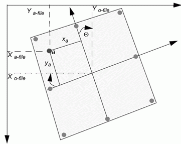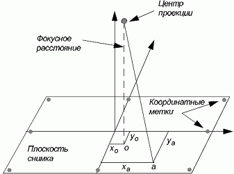Элементы внутреннего ориентирования (Источник: LPS Project Manager User's Guide)
Внутренняя геометрия камеры определяется следующими элементами:
- главной точкой
- фокусным расстоянием
- координатными метками
- дисторсией объектив
Внешнее ориентирование
Определяет положение и угловую ориентацию снимка. Переменные, характеризующие положение и ориентацию снимка, называются элементами внешнего ориентирования. Элементы внешнего ориентирования определяют параметры снимка на момент съемки. Линейными элементами внешнего ориентирования являются Xo, Yo, Zo. Они задают положение центра проекции (О) относительно наземной системы координат (X. У, и Z). Zo обычно определяет высоту камеры над уровнем моря, которая задается датумом.
Угловые элементы внешнего ориентирования характеризуют соотношение между наземной системой координат (X Y, и Z) и системой пространственных координат изображения (x,y и z). Для определения углового ориентирования обычно используются три угла поворота омега (ω), phi (φ), and kappa (κ). Рисунок ниже демонстрирует элементы внешнего ориентирования.
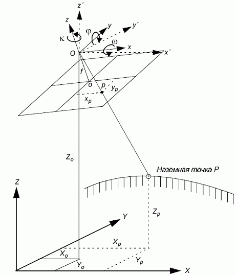Элементы внешнего ориенторования (Источник: LPS Project Manager User's Guide)
 Создание цифровой стереомодели
Создание цифровой стереомодели
Цель: создание точной цифровой стереомодели с помощью модуля Stereo Analyst в среде Erdas Imagine.
Входные данные: la_left.img – левый аэрофотоснимок, la_right.img – правый аэрофотоснимок.
Файлы снимков расположены в установочной директории программы $IMAGINE_HOME/examples/la (при наличии установленных данных с диска Data Erdas IMAGINE).
1. Выберите файлы la_left.img и la_right.img и скопируйте их в свой рабочий каталог.
2. Убедитесь, что файлы доступны для редактирования, для этого откройте свойства файла, и снимите флажок "только для чтения".
3. Откройте ERDAS IMAGINE, и выберите STEREO ANALYST на панели инструментов.
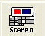
4. Нажмите на кнопку Open Layer (Открыть) на панели инструментов рабочей области:
Примечание: Откроется окно Select layer to open (выберите слой для открытия). Здесь вы можете выбрать тип файла, который хотите открыть в рабочей области.
5. Выберите тип файла ".img".
6. Найдите свой рабочий каталог, где вы сохранили данные, и выберите la_left.img.
7. Нажмите ОК.
Примечание: Изображение г. Лос-Анджелес, штат Калифорнии отобразится на рабочей области. В настоящее время у аэрофотоснимков нет пространственной привязки, поэтому в строке состояния будут отображаться строки и столбцы пикселей.
8. Для того, чтобы открыть второе изображение нажмите File -> Open -> Add a second image for stereo (Файл -> Открыть -> Добавить второе изображение для стерео).
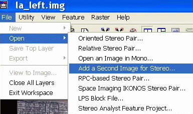
9. Найдите свой рабочий каталог, где хранятся данные, и выберите файл la_right.img.
10. Нажмите OK.
Изображение отобразится в рабочей области окна Stereo Analyst:
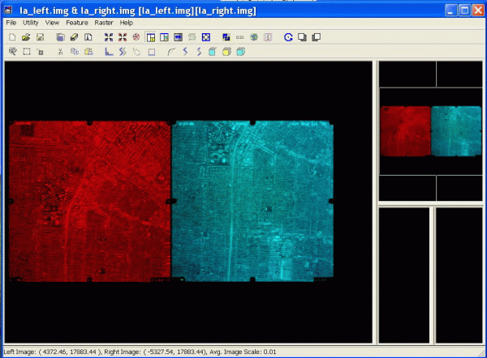
Примечание: Stereo Analyst предусматривает создание стерео пары из двух изображений, в области их перекрытия. Для создания используется функция Create stereo model. Результат операции сохраняется в отдельном файле.
11. Нажмите Utility -> Create Stereo Model Tool (Утилиты -> Создать Стерео Модель)
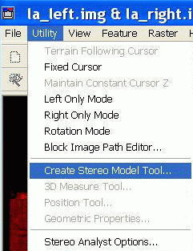
12. Нажмите на поле Block filename (Имя блок файла), перейдите в ваш рабочий каталог и введите имя "la_create", в качестве разрешения выберите ".blk".
13. Нажмите ОК
14. В диалоговом окне Create Stereo Model нажмите на кнопку:
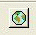
Появится окно выбора проекции Projection Chooser.
15. Переключитесь на закладку Custom если это необходимо. В качестве проекции "Projection Type" выберите из ниспадающего списка "UTM".
16. Для поля "Spheroid Name" (имя Сфероида) выберите из ниспадающего списка "GRS 1980".
17. Для поля "Datum Name" (Имя Датума) выберите "NAD83".
18. Выберите 11 зону для "UTM Zone" (номер зоны для UTM).
19. Выберите "NORTH" (северное) для полушария.
22. После окончания процедуры ввода сравните ваше окно с данными представленными на изображении ниже.
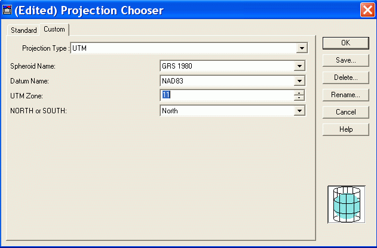
23. Нажмите ОК.
24. Убедитесь, что в полях "Map X,Y Units" (единицах карты по х,у) и "Сartesian Units" (еденицы декартовой системы координат) установлены метры.
26. Введите значение 3925 для поля "Average Height" (средняя высота) в метрах.
Примечание: Средняя высота рассматривается как средняя высота полета.
27. Убедитесь, что поле "Angular Units" (угловые единицы) измеряются в градусах (degrees).
Примечание: Угловые единицы используются для определения единиц внешнего ориентирования камеры/сенсора.
28. Установите для "Rotation Order" (параметры вращение) – "Omega,Phi,Kappa", а в качестве направления съемки "Photo Direction" выберите ось "Z".
30. Когда вы закончите, закладка "Common" должна выглядеть как на изображении ниже.
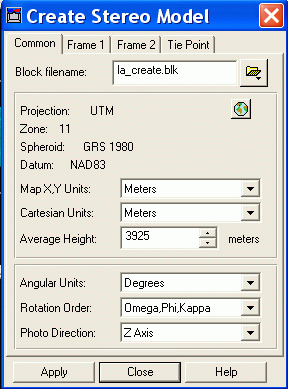
Далее вам необходимо определить параметры камеры, для первого изображения в блок - файле. Для того, чтобы добавить эту информации Вам необходимо открыть закладку Frame 1.
31. Нажмите на закладку "Frame1"
Примечание: Запись для поля "Image filename" уже заполнено записью "la_left.img". Это поле автоматически заполняется файлом первого изображения, которое вы открывали в рабочей области Stereo Analyst Workspace.
32. Убедитесь, что "Interior Affine Type" (внутренний аффинный тип меток) определен как "Image to Film".
Примечание: Внутренний аффинный тип меток определяет настройки, используемые для отображения шести коэффициентов, которые описывают отношение между системой координат фотопленки и изображения. Система координат изображения измеряется в пикселях, тогда как измерения по фотопленке производятся в миллиметрах, микронах и т.д. Функция "Image to Film" описывается 6-ю коэффициентами аффинного преобразования: при этом происходит конвертация пикселей в линейные единицы - микроны и т.д. Функция "Film to Image" производит обратную операцию.
33. Убедитесь, что в качестве "Camera Units" (единица измерения камеры) установлены миллиметры. Единицы камеры должна соответствовать калибровочному значению камеры, используемого для длины фокуса и начальной точки оси х и у.
34. В поле "Focal Length" (длина фокуса) введите 154.047. Длина фокуса примет значение с учетом поправки.
35. В поле начальная точка Хо (Principle Point Xо) введите 0.002. Начальная точка перемещается в направлении Х с учетом поправки.
36. В поле начальная точка Yо (Principle Point Yо) введите -0.004. Начальная точка перемещается в направлении Y с учетом поправки.
Примечание: Вкладка "interior" (параметры внутреннего ориентирования) дает возможность ввести шесть аффинных коэффициентов внутреннего преобразования (такие как а0,а1,а2,b0,b1,b2). Вкладка "exterior" (параметры внешнего ориентирования) дает возможность ввести шесть внешних параметров изображения (такие как X,Y,Z, omega,phi,kappa).
37. Используйте эти параметры для изображения la_left:
Interior Parameters (параметры внутреннего ориентирования)
a |
b |
|---|---|
a0: 116.5926 a1: 0.000043 а2: -0.023991 |
b0: 116.5700 b1: -0.023995 b2: -0.000041 |
Exterior Parameters (параметры внешнего ориентирования)
position |
rotation |
|---|---|
X: 382496.9993 Y: 3765072.1510 Z: 3921.7234 |
omega: 0.3669 phi: -0.1824 kappa: 91.5355 |
38. Откройте вкладку Frame2. Поля длина фокуса и начальные точки Хо и Уо заполнятся автоматически.
39. Воспользуйтесь следующими таблицами и заполните параметры для la_right.img:
Interior Parameters (параметры внутреннего ориентирования)
a |
b |
|---|---|
a0: 116.2486 a1: 0.000018 а2: -0.023987 |
b0: 116.8011 b1: -0.023992 b2: -0.000017 |
Exterior Parameters (параметры внешнего ориентирования)
position |
rotation |
|---|---|
X: 382484.8340 Y: 3762868.9323 Z: 3928.6787 |
omega: 0.1419 phi: 0.4291 kappa: 91.7508 |
40. Нажмите Apply.
Все внесенные изменения сохранятся для блок-файла la_creat.blk
41. Нажмите Close (Закрыть) для выхода из окна создания стереомодели.
42. На панели инструментов нажмите на кнопку Close all displayed layer and clear the viewer (Очистить рабочую область)
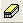
43. Нажмите кнопку Open Layer (Открыть)
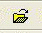
44. Выберите расширение *.blk и откройте блок-файл la_create.blk.
45. Ваш блок-файл отобразится в окне Digital Stereoscope Workspace, используйте анаглифные очки, для того, чтобы увидеть ЦСММ в области перекрытия снимков.
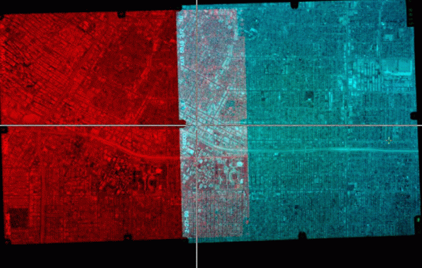
Примечание: Для корректирования изображения по осям Х и У, необходимо удерживая нажатой клавишу Х или У перемещать изображение мышью по оси Х или У соответственно. Эта операция называется подстройкой параллакса. Параллакс по оси X называется горизонтальным, а по оси Y–вертикальным. Вертикальный параллакс подстраивается один раз для всей сцены, горизонтальный по мере необходимости.
Дата создания: 27.05.2009
Автор(ы): Ильмир Нугманов